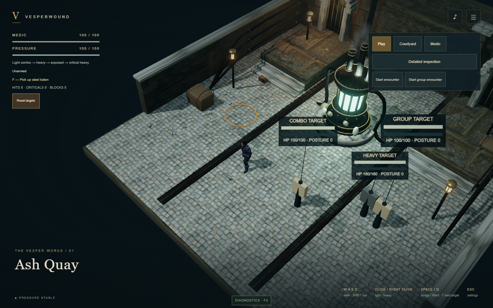
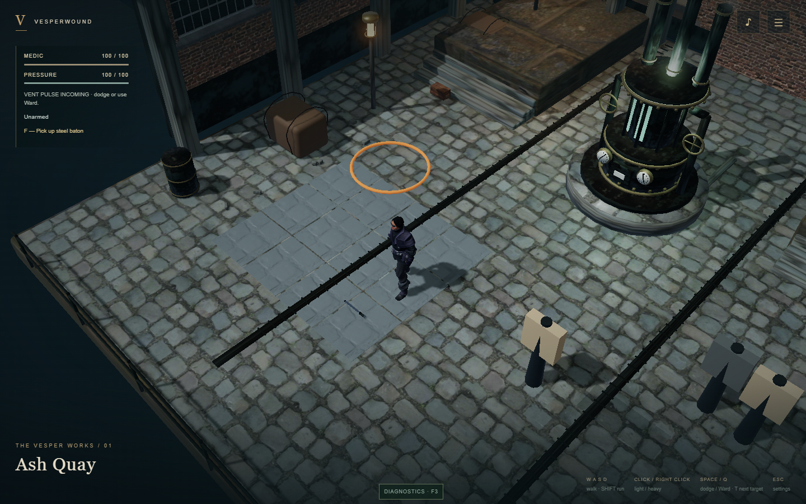
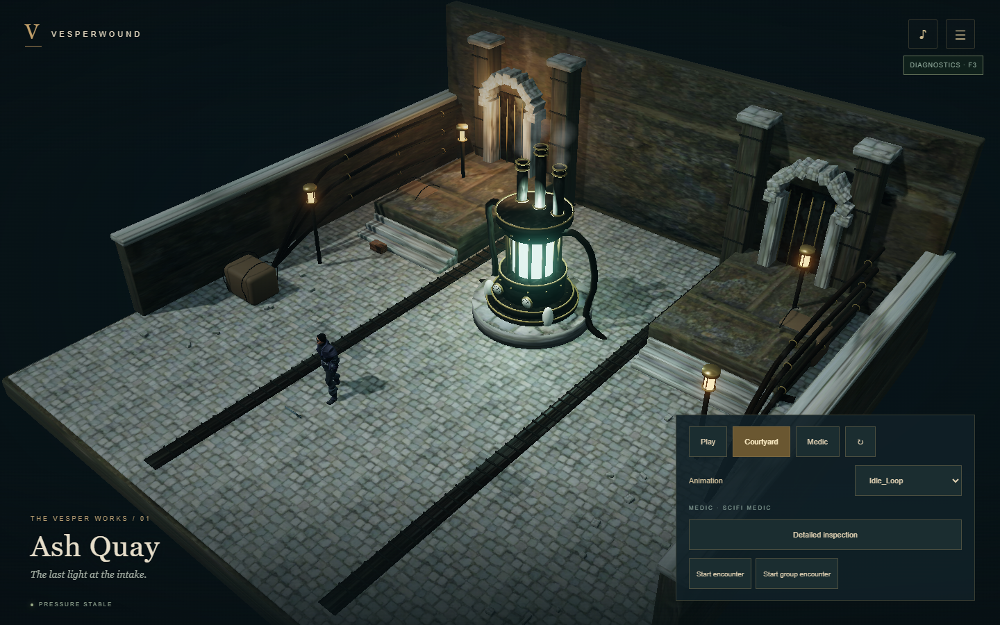
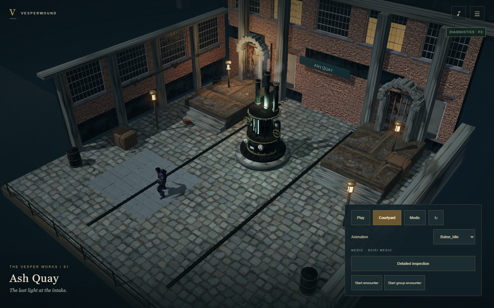
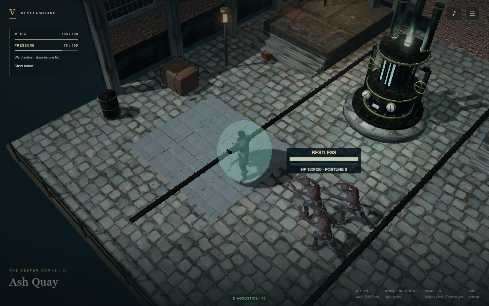
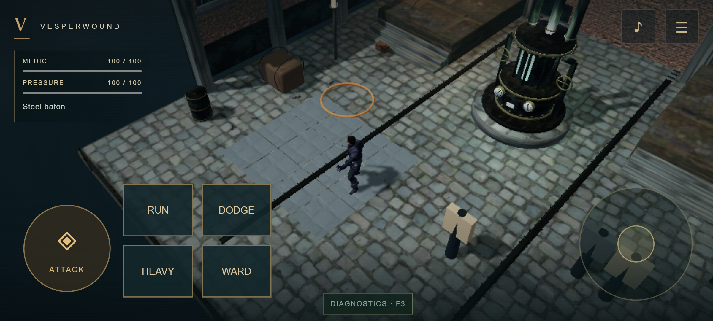
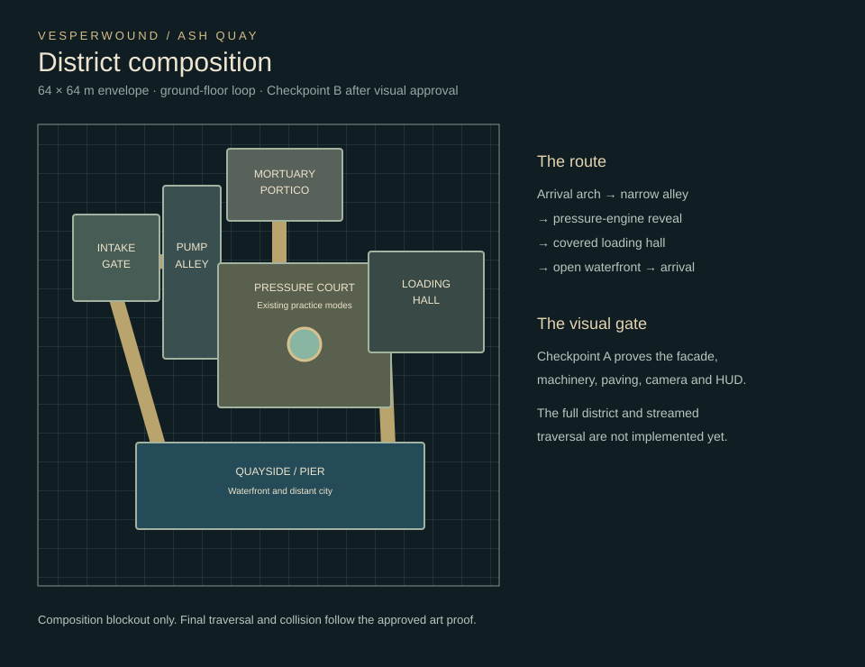

Ash Quay — Checkpoint A
Awaiting visual review. This checkpoint establishes the art, camera and interface direction in the existing playable footprint. The expanded 64 m district is a blockout; connected exploration and streaming are Checkpoint B.
Gameplay framing

Previous scene and camera
Checkpoint A · actual WebGPU browser renderEnvironment composition

Previous overview
Checkpoint A overviewCombat and mobile

Existing combat retained
WebGL2 · emulated mobile landscapeWalkthrough recordings
WebGPU · WebGL2 · Mobile landscape
District blockout

Validation and limitations · Runtime asset report · Provenance